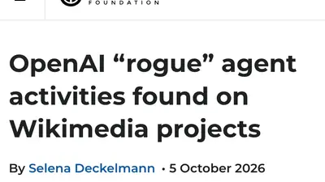
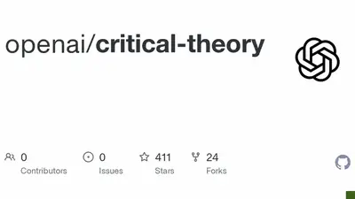
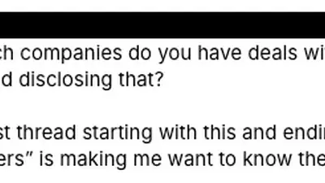
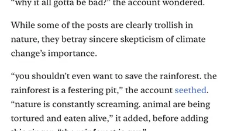

depths of wikipedia
@depthsofwikipedia.bsky.social
· 10/07 04:15· 命中「OpenAI」
it blows my mind that these bizarre AI people think “the commons” is just sitting around for them to strip-mine for free
 時事2026.10.05
時事2026.10.05
Social Lab（OpView 社群口碑資料庫）每週彙整各平台熱門事件。榜上的數據以圖表呈現， 這裡列出每週彙整的標題與觀測期間，點進去看完整排行。
 PTT
PTT
 Dcard
Dcard
 Mobile01
Mobile01
 Instagram 意見領袖
Instagram 意見領袖
 YouTube 意見領袖
YouTube 意見領袖
Social Lab 依社群聲量統計的各平台人氣意見領袖前三名。
Bluesky 的全站熱門話題，以英語圈的娛樂、體育、政治為主，僅供參考。
以 30 小時內、依讚數與轉發數排序，已過濾掉 AI 繪圖標籤與明顯洗版內容。
it blows my mind that these bizarre AI people think “the commons” is just sitting around for them to strip-mine for free

this is about me and i'm not sorry! i don't have time to read about foreplay and where the g spot is or whatever. i'm sure spending hours and hours fucking your wife is a good ROI if you're unemployed but some of us have jobs also claude has a huge hog so that's another point in the AI column
Fellow authors: how do you keep the constant flood of LLM-extruded scam e-mails (the ones where the robot consumed your book to regurgitate back its major themes, like a house cat presenting you with a coughed-up hairball) from absolutely destroying your soul?
Gemini told me this image was real, except that Grimace was added. But the entire AI image was created by Gemini. It's 100% fake.

This shit makes me mega pissed off because we absolutely need to rid ourselves of Adobe but copying their homework using an LLM is not how you do that, that’s unsustainable for like five million reasons if you think about it for like two seconds.
“Wikimedia’s volunteers are the ones who come in first contact with, and clean up the mess left behind by AI agents. ... Wikimedia’s volunteers have stayed resilient so far in tackling emerging challenges on our platforms, but we also want to say: it doesn’t need to be this way.”
Full disclosure: I have deals with Apple, Google, OpenAI, Adobe and a bunch of others. Unfortunately the deal is that I pay them a monthly fee in exchange for their services.

“While OpenAI admits to agents behaving ‘unpredictably’, they must also acknowledge their responsibility to monitor and prevent these risks,” Wikimedia said. “AI companies are not doing enough to secure their systems and protect the public from the harm they cause.” arstechnica.com/security/202...
Yeah OpenAI or Anthropic or whoever might go bankrupt, some specific use cases like ‘therapists’ might be litigated to oblivion. But things that involve interfacing with code are never, ever going back to the modal default being a human being typing things out, like it’s just full stop not happening
You may remember the breathless media coverage globally about an Anthropic employee recently after he tweeted AI will end humanity in a decade. Here are his prior tweets. Will these get mainstream coverage? futurism.com/artificial-i...

Hey how about 722 advanced math papers dumped on everyone’s head. Don’t worry, there’s a forty page catalog summarizing all the claimed results. github.com/openai/math
Meta's new AI assistant, Muse, reads your email, messages and Instagram, supposedly so it can handle chores like grocery orders and canceling subscriptions. TIME went through Muse's internal instructions and found it updates a profile on you every hour. It profiles the people you talk to as
OpenAI just blooped hundreds of proofs and counterexamples to open problems: github.com/openai/math/... Boggling.
Having recently attended a 4-hour "AI Essentials for Parents" session at AFT's National Academy for AI Instruction, I can confirm! It began with "how to make informed choices" and ended with a 1-hr tutorial for your child to use ChatGPT/Copilot/Claude as a "study buddy and thought partner". 🤨